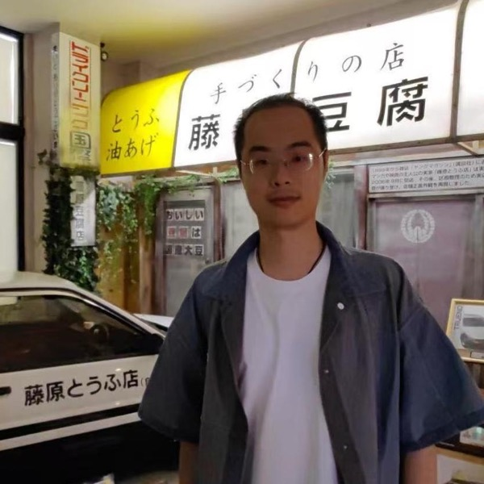

Joined China Telecom Suzhou, focusing on enterprise AI R&D, private deployment, and technical solution design.

China Telecom · Suzhou, China
Mingchao Xu
Applied AI Researcher & Engineer
I am an applied AI researcher and engineer at China Telecom in Suzhou. My work focuses on multimodal large language models and computer vision, with an emphasis on developing reliable systems for real-world applications.
Previously, I worked on end-to-end autonomous-driving perception at Momenta, parking and BEV perception at HoloMatic, and map-change discovery at Alibaba Amap. I received my M.Eng. from the Institute of Automation, Chinese Academy of Sciences, and my B.Eng. from Harbin Institute of Technology.
Research interests:
Multimodal LLMs
Computer Vision
Autonomous Driving
2D / 3D Perception
News
Deployed a Qwen3-based police-call classification and quality-inspection system covering 1,145 subclasses.
Completed production work on end-to-end perception, AEB, and failsafe systems at Momenta.
SRR-GAN was presented as an oral paper at ICFHR 2020.
Selected Projects
Research-driven systems deployed in public services, autonomous driving, and map intelligence.
Police-call classification and quality inspection with LLMs
Fine-tuned and deployed Qwen3 7B/14B/32B models for a four-level taxonomy with 1,145 subclasses. Designed long-tail sampling, instruction templates, evaluation, and private-platform serving.
- 97%+ overall accuracy
- 99.9%+ accuracy on critical classes
- <0.5 s inference per case
End-to-end perception for cruise and AEB
Migrated a two-stage DD3D system to a one-stage EBM architecture. Combined Transformer, BEV and perspective-view features with radar and egomotion for robust detection.
- 67.3 → 68.8 CPD
- 92.1% AEB success rate
Failsafe perception under extreme conditions
Improved visual risk detection under glare and occlusion. Fused local visual patches with planning trajectories, LiDAR, and radar to refine alarm triggering and degradation strategies.
- 77.7% → 82.7% recall @ precision ≥ 0.9
- 51 → 6,000+ CPI
- 1 / 14,000 km false-alarm frequency
Lane and road-object change discovery
Developed change-detection systems using multi-frame image features, HD-map geometry, localization, matching, and temporal fusion for automated map updates.
- 92% recall at 2.5% FPR for lane changes
Publications
ICFHR
2020
ORAL
SRR-GAN: Super-Resolution based Recognition with GAN for Low-Resolved Text Images
17th International Conference on Frontiers in Handwriting Recognition (ICFHR), 2020, pp. 1–6.
A unified adversarial framework for jointly learning text super-resolution and recognition on low-resolution scene and handwritten text.
Experience
China Telecom, Suzhou
AI R&D and Solution Engineering
Momenta
Algorithm Researcher, DDOD Perception
HoloMatic
Algorithm Researcher, Perception
Alibaba · Amap
Algorithm Researcher, Vision R&D Center
SenseTime
Research Intern, Face Anti-Spoofing & Industrial Vision
Education
University of Chinese Academy of Sciences
M.Eng., Computer Application Technology
Institute of Automation, CAS · Top 5%
Harbin Institute of Technology
B.Eng., Automation
Honors School · Top 5%
Selected Honors
- Star Intern of the Year, SenseTime
- National Encouragement Scholarship, Top 3%
- HIT Second-Class Scholarship, Top 10%
- Second Prize, Provincial Mathematical Modeling Contest
Contact
For research discussion or industry collaboration, please feel free to get in touch.
mingchao.xu.casia@gmail.com